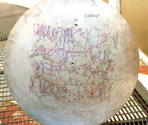
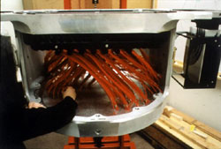

|
The Science of SDSS |
Apache Point Observatory |
Telescope Details
Tour the SDSS Site | Data Processing Challenges | FAQ |
Astronomers will select 600 distant objects at a time for spectral analysis. In the support building, shown above, astronomers will plug drilled aluminum discs with optical fiber cables to feed light from the telescope to spectrographs. When attached to the telescope, each cable will be located at the celestial position of a selected object.
The aluminum plug plate from the Las Campanas Redshift Survey (shown at left) illustrates what an SDSS plate will look like after it has been drilled with holes. For each hole, there's a corresponding object in the sky waiting to have its spectrum observed.
On the right is a view of a plug plate that's been drilled, fitted with optical fibers, and mounted on the spectograph assembly. This entire package will be flipped upside down and mounted to the underside of the 2.5-meter telescope at its focal plane.
{kind=link}
{kind=link}
{kind=link}